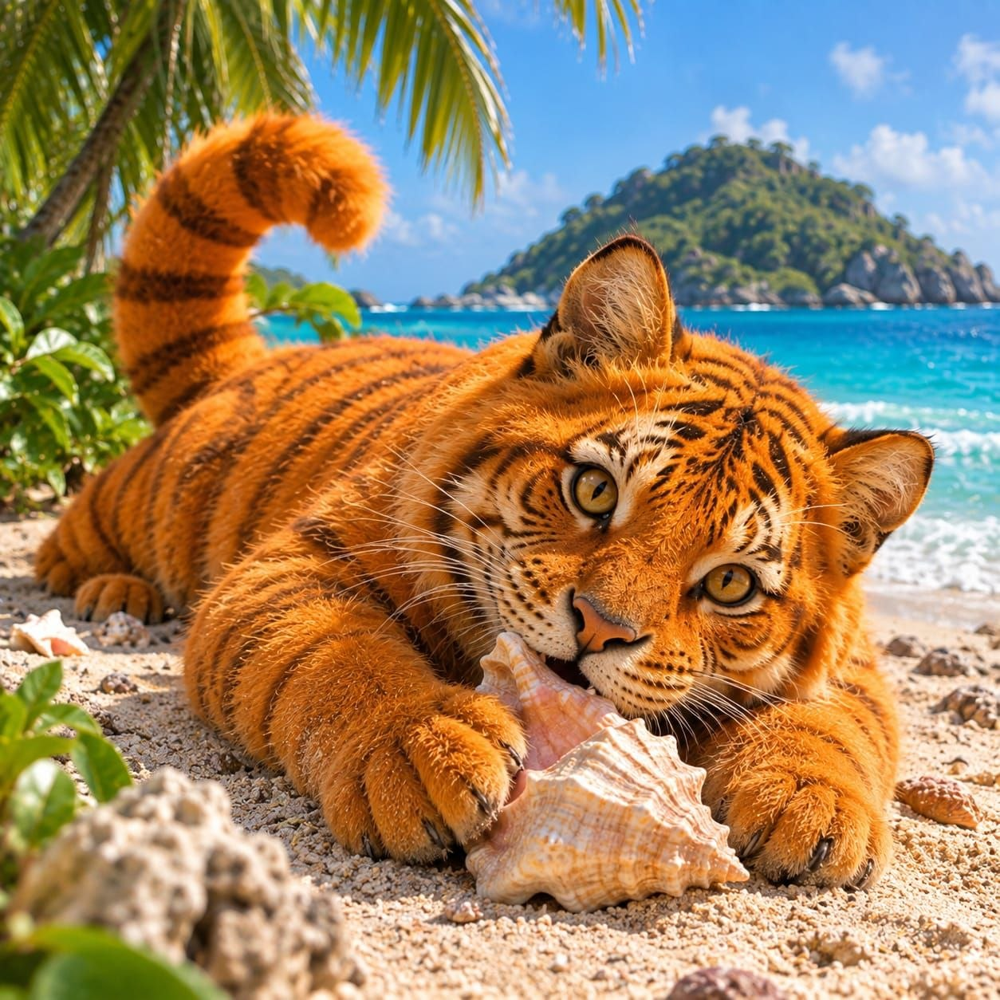

Al Oeste del Caribe, se ubica la Isla de tus sueños. Clima cálido, playas refrescantes, y una flora y fauna alucinante. Aquí encontrarás diversa especies de animales, llevando la atencipon de todos su animal nacional el gran Gato Calabaza.

Famoso por su gran tamaño, su historia en el Pueblo Jengibre y los festivales dedicados en su honor.